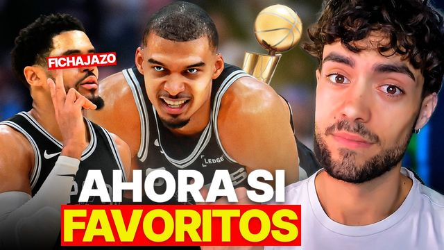
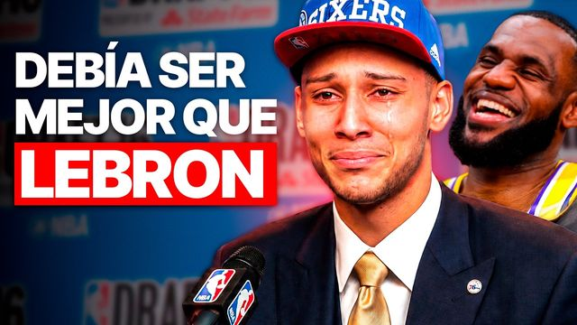
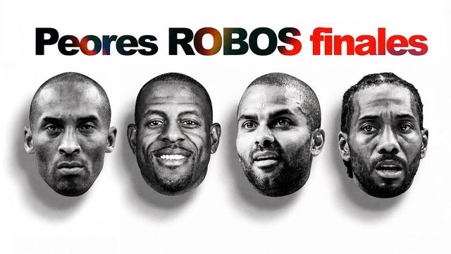
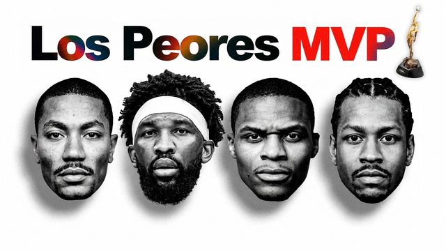
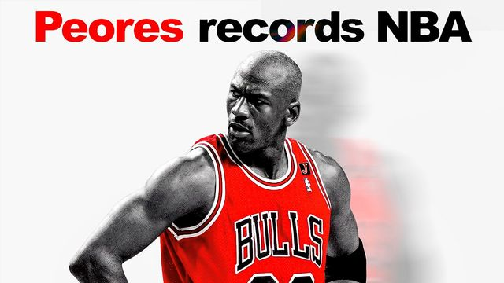
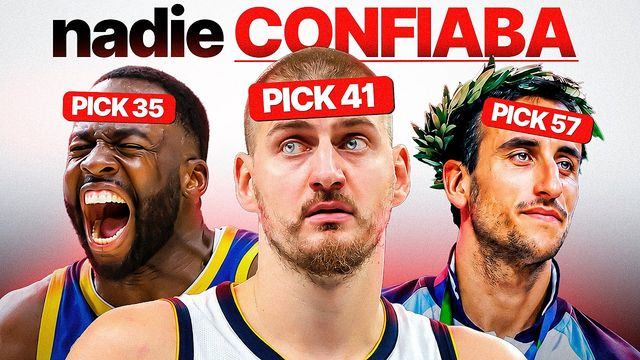

Media kit · Octubre de 2026
Análisis periodístico de la NBA en español, por Max Riveras
Un año en YouTube y 139.964 horas vistas: casi 16 años de visionado. Análisis en profundidad, con datos y con historia, para una audiencia que no pasa de largo: el 70,9% vuelve.
Y además, reels y shorts propios en Instagram, TikTok y Facebook.
Sin compromiso · Respuesta en menos de 24 h
Más de 729.000 vistas solo entre estos 12 vídeos, todos de 2026. Guion, voz y edición de Max Riveras.

57K vistasLa NBA no está preparada para estos Spurs
52K vistasLos 5 PEORES NUMEROS 1 del Draft (y a quién DEBIERON elegir)
48K vistasLos PEORES MVP's de las FINALES (y quién debía GANARLO)
47K vistasLos MVP más INJUSTOS del SIGLO (y quién debía ganarlo)
41K vistasLos récords más VERGONZOSOS de la NBA
40K vistasLos MEJORES jugadores IGNORADOS en SEGUNDA RONDA del DRAFT de la NBA 35K vistasEstos MIAMI HEAT son MEJORES de lo que TODOS piensan 32K vistasEl Draft de 2018 CAMBIÓ la NBA para siempre94,8% de las vistas, desde 20 países de habla hispana
Y no caduca: los vídeos siguen sumando vistas y suscriptores meses después de publicarse.
También en otras redes, con reels y shorts propios. En total, 36.117 seguidores entre YouTube, Instagram, TikTok y Facebook.
4.800 seguidores
4.217 seguidores
9.700 seguidores
17.400 suscriptores, pero 156.400 personas distintas en 28 días: casi 9 veces la base. Y el 94,8% de las vistas de los vídeos largos llega desde 20 países de habla hispana, con México a la cabeza (26,2%).
El 70,9% repite (últimos 28 días) y aguanta el formato largo: 43,9% de retención media por vídeo, con un récord de 54,8%. Tu campaña llega a la misma gente semana tras semana, y una mención de 60 a 90 segundos cae dentro de lo que ya está viendo.
91% hombres, 70,9% entre 25 y 54 años y el 38,9% en el 20% de hogares con más renta: casi el doble de su peso en la población. Según YouTube, con un interés muy alto en videojuegos de deportes y de acción, en baloncesto y en running.
La integración no es un anuncio pegado: la presenta Max, con su voz y en el tono del análisis, delante de una audiencia que vuelve a escucharle cada semana. Y tú apruebas el texto antes de publicar.
Un formato, bien hecho: tu marca dentro de un vídeo largo de YouTube, presentada por Max. Cada propuesta se prepara a medida de tu marca, tu mercado y tus fechas.
Tu marca en un vídeo largo, con un informe completo al terminar.
Tu marca, vídeo a vídeo, durante la temporada.
Opcional: uso del clip de la integración en tus redes o en tus anuncios.
Si tu marca quiere llegar a hombres de 25 a 54 años que viven la NBA en México, el Caribe hispano, España y Sudamérica, escríbenos y te preparamos una propuesta personalizada.
Pedir propuestaSin compromiso · Respuesta en menos de 24 h